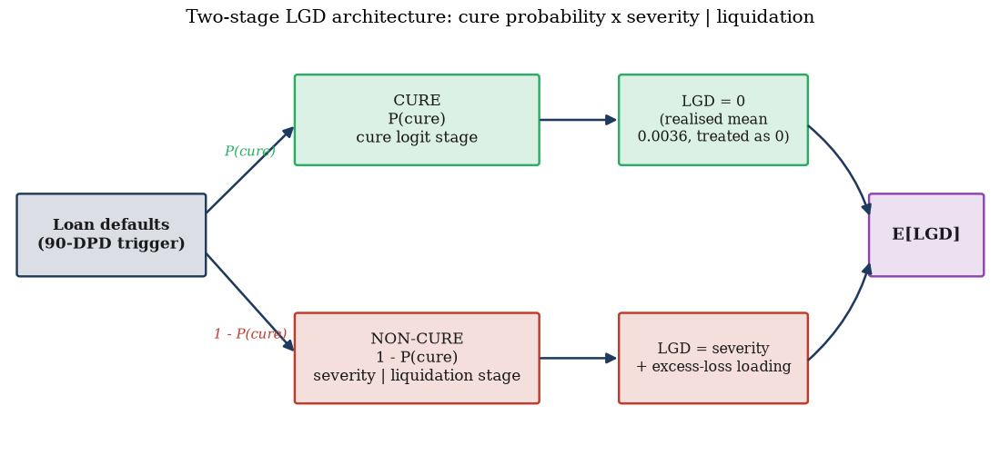
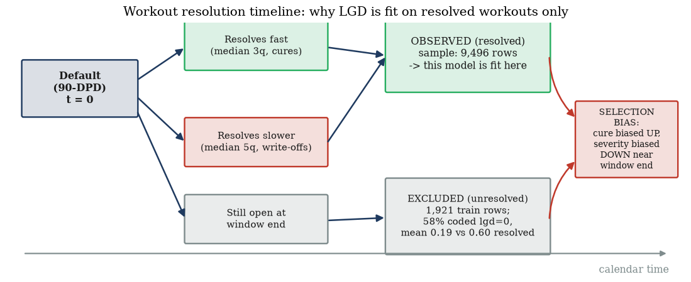
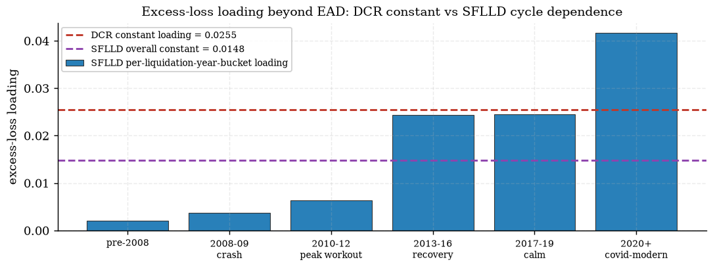
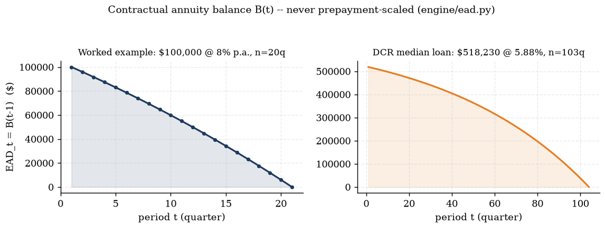

Chapter 2 derived $\mathrm{ECL}=\sum_t S(t-1)\lambda_t\, LGD_t\, EAD_t\,(1+EIR)^{-t}$ and treated $LGD_t$ and
$EAD_t$ as given inputs so it could focus on the survival/discounting machinery around them. This chapter builds
those two curves from first principles. Workout LGD is not a single number to regress — it is bimodal (a cure
spike near zero loss, a write-off hump at high loss), so a plain regression through it predicts a value that
almost never occurs (§10.2). We derive the two-stage architecture that fixes this, quantify — with the
project's own numbers — the selection-bias trap that comes from fitting it on resolved workouts only, walk the
DCR cure/severity coefficients, and derive the excess-loss loading that keeps losses beyond $EAD$ honest rather
than clipped away. On the EAD side we derive the contractual level-payment annuity balance $B(t)$ from the
payment recursion, walk the revolver credit-conversion-factor (CCF) worked example every step, and close by
revisiting — from the EAD side this time — the double-counting rule Chapter 2 §2.6 introduced from the
survival side. Source anchors: knowledge/sources/ifrs9_credit_risk_notes.md §10.1–10.3
(4.1–4.4) and §12.1–12.3
(4.7–4.9); project evidence from outputs/lgd/lgd_report.md
(4.1–4.5), outputs/freddie/lgd/lgd_report.md
(4.6), and outputs/ead/ead_report.md / engine/ead.py
(4.7–4.10).
4.1 The two-stage LGD architecture: from a bimodal outcome to E[LGD]
Start from the measurement definition. Workout LGD collects every post-default cash flow —
recoveries $R_k$ (payments, collateral-sale proceeds, guarantee/insurance claims) and direct workout costs $C_k$
— discounts them at the loan's original EIR back to the default date, and sets
(§10.1). IFRS 9 LGD must be unbiased and point-in-time — a deliberate contrast with Basel IRB's
downturn-calibrated, conservatism-loaded LGD. But the distribution this ratio actually takes across a defaulted
population is not the smooth, roughly-normal shape a plain OLS or logistic-severity regression assumes: it is
bimodal — a spike of loans that cure with (near) zero loss, and a separate hump of loans that go
to write-off with high, right-skewed loss (§10.2, Fig. 8). One regression through both modes at once
predicts a middling value — say 35% — that essentially no individual loan actually realises.
Definition — the two-stage (cure) model. Split the outcome into two sequential stages instead of one
regression: a cure stage (will this defaulted loan return to performing / resolve loss-free?) and a
severity stage (given it does not cure, how large is the loss?). Formally (§10.2):
$$ \mathbb{E}[LGD] = P(\text{cure})\cdot LGD_{\text{cure}} + \big(1-P(\text{cure})\big)\cdot LGD_{\text{write-off}}. $$
This mirrors the actual data-generating process (a workout genuinely resolves one way or the other) and lets
macro variables act on the correct margin — cure rates collapse sharply in recessions even when collateral
severities, conditional on not curing, move comparatively little.
Deriving the formula from the law of total expectation (expanding §10.2's stated formula into its
underlying probability argument — the source notes assert the two-stage split; this derivation shows why it is
exactly correct, not merely a convenient approximation).
1.Define the partition. Let $C\in\{0,1\}$ be the
indicator that a defaulted loan cures ($C=1$) or does not ($C=0$, "non-cure" / liquidation). Every resolved
default falls into exactly one of these two mutually exclusive, jointly exhaustive events — $\{C=1\}$ and
$\{C=0\}$ partition the resolved-workout sample space.
2.Apply the law of total expectation. For any
partition $\{A_i\}$ of the sample space, $\mathbb{E}[X]=\sum_i \mathbb{E}[X\mid A_i]\,P(A_i)$. With
$X=LGD$ and the two-event partition from step 1:
$$ \mathbb{E}[LGD] = \mathbb{E}[LGD\mid C=1]\,P(C=1) + \mathbb{E}[LGD\mid C=0]\,P(C=0). $$
3.Substitute the project's cure convention. A
cured loan is, by construction and by measurement, a (near-)zero-loss outcome: the DCR fit sets
$LGD_{\text{cure}}=0$ exactly (the realised mean LGD among the 1,162 train cures is
$0.0036$ — not exactly zero, but close enough that the model treats it as zero rather than fitting a third,
unnecessary regression on an already-tiny residual — a documented simplification, see the gotcha below). With
$\mathbb{E}[LGD\mid C=1]=0$ the first term vanishes:
$$ \mathbb{E}[LGD] = 0\cdot P(\text{cure}) + \mathbb{E}[LGD\mid C=0]\cdot\big(1-P(\text{cure})\big)
= \big(1-P(\text{cure})\big)\cdot \mathbb{E}[\text{severity}\mid\text{liquidation}]. $$
4.Two independently-fit stages. $P(\text{cure})$
is a logistic ("cure logit") model on the resolved-workout sample (§4.3 below); $\mathbb{E}[\text{severity}
\mid\text{liquidation}]$ is a fractional-logit severity model fit only on the non-cure subset, further
augmented by the excess-loss loading derived in §4.4. The two stages are estimated separately — the second
stage's sample is conditioned on the first stage's outcome, exactly matching the conditioning in
$\mathbb{E}[LGD\mid C=0]$ above.
What this means. The formula $E[LGD]=P(\text{cure})\cdot 0+(1-P(\text{cure}))\cdot E[\text{severity}\mid
\text{liquidation}]$ is not an approximation to the bimodal distribution — it is the exact expectation of
any random variable that only takes two conditional regimes, derived from nothing more than the definition of
conditional expectation applied to a two-event partition. The entire modelling problem is displaced from "fit one
regression to a bimodal target" (which cannot work) onto "fit two well-behaved regressions to two unimodal
conditional targets" (a logistic cure probability, and a severity distribution that — once you condition on
not curing — is a single right-skewed hump, not two).
Gotcha — "$LGD_{\text{cure}}=0$" is a modelling convention, not a law of nature. The report is explicit
that realised mean LGD among train cures is $0.0036$, not zero — a cured loan can still carry a small residual
loss (a missed payment fee, a short partial write-down before full reinstatement). Setting $LGD_{\text{cure}}=0$
exactly is a documented simplification (outputs/lgd/lgd_report.md, "Documented simplifications"):
the residual is small enough, relative to the non-cure severity that dominates $\mathbb{E}[LGD]$, that adding a
third regression to capture it would not be worth the added model risk. A reviewer should treat this as a
disclosed, deliberate approximation — check it is still small before reusing the convention on a different
portfolio (a book with material fee/penalty structures on cured accounts could break the "$\approx 0$"
assumption).
Check yourself.
Why does one regression fitted directly on all realised workout LGDs (cures and write-offs pooled) tend to
predict a value that almost no individual loan actually realises?
Answer
Because the realised outcome is bimodal — a spike near zero (cures) and a separate hump at
high loss (write-offs) — so a single continuous regression is forced to predict somewhere in between (e.g. an
intermediate "average" severity), a value that sits in the low-density valley between the two real modes rather
than near either of them.
In the two-stage formula $\mathbb{E}[LGD]=P(\text{cure})\cdot LGD_{\text{cure}}+(1-P(\text{cure}))\cdot
LGD_{\text{write-off}}$, which theorem guarantees this decomposition is exact (not an approximation), and what is
the partition it is applied to?
Answer
The law of total expectation, $\mathbb{E}[X]=\sum_i\mathbb{E}[X\mid A_i]P(A_i)$, applied to
the two-event partition $\{C=1\text{ (cure)}, C=0\text{ (non-cure)}\}$ of the resolved-workout sample space —
exact for any partition, by definition of conditional expectation, with no distributional assumption on $LGD$
itself required.
If a bank's cure convention instead used the realised mean cure-loss (0.0036) rather than exactly 0, would the
two-stage formula in step 3 of the derivation still simplify to $(1-P(\text{cure}))\cdot E[\text{severity}\mid
\text{liquidation}]$?
Answer
No — the first term $\mathbb{E}[LGD\mid C=1]\,P(\text{cure})$ would no longer vanish; it
would contribute a small additive term $0.0036\times P(\text{cure})$ to $\mathbb{E}[LGD]$. The simplification to
a single product is a direct consequence of the project's specific $LGD_{\text{cure}}=0$ convention, not of the
law of total expectation itself (which holds regardless of what $\mathbb{E}[LGD\mid C=1]$ equals).

Exhibit 4.1 — The two-stage LGD decision tree: cure probability (Stage 1 logit)
× severity given liquidation (Stage 2 fractional logit, plus the §4.4 excess-loss loading).
Regenerated box-arrow diagram (knowledge/sources/ifrs9_credit_risk_notes.md §10.2,
outputs/lgd/lgd_report.md).
4.2 Resolved workouts only: quantifying the selection bias
Both stages above are fit on resolved defaults — workouts that have reached a final cure or
write-off outcome by the time the fit sample is built. Defaults still open at the data window's end have no
observed final $LGD$ yet, so they cannot be labelled cure or non-cure. The obvious response — exclude them and
fit on what is observed — is exactly what both the DCR and SFLLD builds do, and exactly what §10.3's own
"Incomplete workouts" pitfall warns creates bias: "excluding them biases LGD toward fast, favourable
resolutions."
Worked example — the DCR fit sample, every subtraction shown (outputs/lgd/lgd_report.md,
computed here with uv run --no-sync python from the report's stated counts — nothing hand-typed).
quantity
value
arithmetic
train default rows
11,420
—
− unresolved workouts (open at window end)
1,921
—
− NaN-covariate rows
3
—
= resolved fit sample
9,496
11,420 − 1,921 − 3 = 9,496
cures (threshold 0.05)
1,162
—
non-cures
8,334
1,162 + 8,334 = 9,496 ✓
cure rate
12.237%
1,162 / 9,496 = 0.12237
Report rounds the cure rate to 12.2%; the recomputed value (12.237%) matches at the report's displayed precision.
The bias, quantified in the same report. Of the 1,921 train-sample rows excluded as unresolved, 58% carry
an lgd_time value coded exactly 0 — mean 0.19 among the unresolved, versus
0.60 for the resolved sample the model is actually fit on. More broadly across the full panel
(not just the train fit-sample subset above), the report states 24.6% of all default rows have
res_time = NaN — a different, larger denominator than the 1,921/11,420 = 16.8% figure above
(which is the train-fit-sample-only unresolved share); both numbers describe the same mechanism at two different
population scopes and should not be conflated. The direction of the bias is unambiguous either way: workouts that
resolve fast — cures and quick write-offs — are systematically over-represented in the observed
(resolved) sample near the data window's end, because slow workouts simply have not finished yet. This inflates
the fitted cure rate and deflates the fitted severity relative to the true, eventual population values.
What this means. This is not a defect unique to the DCR build — the SFLLD refit (§4.6) documents the
identical mechanism with the identical direction, and generalises it further: the bias concentrates in
recency (whichever default cohort is closest to the window end), not in any single macro episode. A
model built today on "resolved workouts only" is honest about what it can observe, but a reviewer must remember
that the most recent 1–2 years of default cohorts in any such fit are the ones most exposed to this
bias — exactly the cohorts a forward-looking IFRS 9 severity estimate needs to trust the most.
Gotcha — "resolved-only" sounds like a data-quality fix, but it is itself a source of bias, not the removal of
one. Excluding unresolved workouts is the only defensible choice — you cannot label an outcome that
has not happened yet — but "defensible" is not the same as "unbiased." The bias direction is always the same:
cure biased up, severity biased down, concentrated in the most recent cohorts. Any LGD build using this
convention (DCR's engine/lgd.py, SFLLD's freddie/lgd.py, and almost every workout-LGD
model in production) inherits this and should document it explicitly rather than presenting resolved-only
estimates as if they were unconditionally representative of the full default population.
Check yourself.
A colleague proposes "fixing" the selection bias by coding every unresolved workout's LGD as the current,
in-progress observed severity rather than dropping it. Does this remove the bias?
Answer
No — it likely makes it worse. An in-progress workout's current severity is itself
an under-estimate of its eventual severity (losses typically accrue further as a workout proceeds — legal fees,
holding costs, further collateral value erosion), so coding it as final would import a second, compounding
downward bias on top of the resolved-only sample's existing bias, rather than correcting it.
Why does the report distinguish "24.6% of all default rows" (unresolved) from "1,921/11,420 = 16.8%" (the
train fit-sample's own unresolved share), rather than quoting a single number?
Answer
They are computed over different denominators — the first is the full panel's default-row
population, the second is specifically the train-split default rows used to build the LGD fit sample. Both are
legitimate statistics about the same underlying selection mechanism, but conflating them would either overstate
or understate the bias exposure depending on which population a reader actually cares about (the whole panel vs.
the specific model-fitting sample).
Why does the selection-bias direction (cure up, severity down) matter more for an IFRS 9 ECL estimate
than for, say, a purely descriptive report on historical recovery rates?
Answer
Because IFRS 9 LGD feeds directly, multiplicatively, into a forward-looking loss
provision ($ECL\propto LGD$) — an under-estimated severity from the resolved-only convention directly
under-provisions, understating the allowance precisely for the newest, least-resolved default cohorts, which are
also the cohorts a bank's current book is most exposed to.

Exhibit 4.2 — The workout-resolution timeline: why LGD is fit on resolved workouts
only, and the selection-bias mechanism this creates. Regenerated box-arrow diagram
(outputs/lgd/lgd_report.md, "Why resolved-only (incomplete-workout trap, notes section 10.3)").
4.3 The DCR cure/severity fit: coefficients and interpretation
With the resolved sample from §4.2 in hand, the two stages are fit as two independent regressions — a
logistic cure model, and a fractional-logit severity model conditioned on non-cure
(engine/lgd.py, outputs/lgd/lgd_report.md).
Exhibit 4.3 — DCR two-stage LGD model: cure vs severity coefficient signs, regenerated
from outputs/lgd/lgd_report.md.
Reading the signs.Cure falls in updated LTV (ltv10 $-0.764$): the collateral channel —
equity lets a distressed borrower sell or refinance out of default, and updated LTV falls as equity rises.
Severity rises in updated LTV (ltv10 $+0.107$, the opposite sign, on the opposite stage — less
equity means a bigger foreclosure shortfall if the loan does not cure). loan_age is seasoning: seasoned
defaulters cure less ($-0.073$, "burnout") and, given they don't cure, cost slightly more ($+0.009$). fico_s
carries little on the cure margin ($-0.140$, weak — conditional on current LTV, the origination score adds
little) but matters more on severity ($-0.253$ — better-scored borrowers keep the property in better condition or
cooperate more in the workout, conditional on eventually losing it).
The one coefficient reported honestly, not sign-asserted: uer_lag1 is POSITIVE on cure ($+0.277$). Higher
lagged unemployment is associated with a higher cure probability, conditional on LTV — counter-intuitive
at first glance. The report's explanation: conditional on updated LTV (which already carries the HPI collapse —
the PD–LGD correlation channel of §10.2), stress-cohort defaulters at a given LTV are more
likely macro-driven than idiosyncratically impaired, and cure more readily once conditions turn. This sign is
robust in a fixed-resolution-runway subsample (coefficient $+1.02$ there), so it is not a resolution-censoring
artefact of §4.2's bias. The raw stress effect on cure is still negative overall — stress raises
updated LTV, and the (much larger, negative) LTV coefficient dominates that channel — the realised OOT cure rate
falls to 7.2% from 12.2% in train. Cure AUC: train 0.837, OOT 0.769.
Gotcha — a positive stress coefficient on cure does not mean "stress helps cure." It is easy to read
uer_lag1's $+0.277$ in isolation and conclude the model has the stress direction backwards. It does not: the
total effect of a stress episode on cure runs through both the direct uer_lag1 coefficient (positive) and
the LTV channel (uer/HPI stress raises LTV, and LTV's cure coefficient is large and negative) — the LTV channel
dominates, so the net, realised effect of stress on cure is negative (7.2% OOT vs 12.2% train), exactly matching
intuition. Reading a single partial coefficient as "the" effect of a macro variable, ignoring the channels it also
runs through indirectly, is the trap.
Check yourself.
Why does ltv10 carry opposite-sign coefficients across the two stages ($-0.764$ on cure, $+0.107$ on
severity), and is that a contradiction?
Answer
Not a contradiction — the same economic driver (collateral equity) affects both margins in
the direction equity theory predicts: more equity (lower LTV) makes curing easier (negative LTV coefficient on
cure) AND, conditional on not curing, makes the eventual foreclosure shortfall smaller (positive LTV coefficient
on severity means higher LTV raises severity, i.e. more equity/lower LTV lowers it). Both signs point the same
economic direction; they appear opposite only because Stage 1's outcome is "cure" (equity favours it, hence
negative on LTV) while Stage 2's outcome is "loss size" (equity reduces it, hence LTV's effect on loss is
positive).
What OOT evidence does the report cite to argue uer_lag1's positive cure coefficient is not an artefact of the
§4.2 resolution-censoring bias?
Answer
The sign is robust in a subsample restricted to defaults with a fixed, long resolution
runway (defaults at or before a cutoff time, giving every loan in that subsample equal time to resolve) — the
coefficient there is even larger ($+1.02$), not reversed or attenuated, which is inconsistent with the effect
being a byproduct of fast-resolving loans dominating the sample.
Cure AUC falls from 0.837 (train) to 0.769 (OOT). Combined with the OOT cure-rate drop (12.2% → 7.2%),
what does this tell you about deploying this cure model unchanged into a stress scenario?
Answer
Both discrimination and the base rate degrade out-of-time — the model still ranks
reasonably (AUC 0.769 is well above random) but is calibrated to a higher base cure rate than stress conditions
actually produce, so a raw application would over-predict cures (understating LGD) in a genuine stress episode;
this is exactly the OOT calibration gap the report's own validation table (§4.4/§4.5 discussion)
quantifies and treats as a documented, monitored limitation rather than a silent one.
4.4 The LGD>1 tail: deriving the excess-loss loading, never clipped
A fractional-logit severity regression is bounded on $(0,1)$ by construction — but realised severity is not.
Workout costs, accrued interest, and legal/holding expenses can push the total loss past the exposure at default,
so realised $LGD>1$ is a genuine, observed outcome: 14.2% of the DCR train non-cure sample has $LGD>1$, with a
mean excess of 0.1790 among that 14.2%. A model that structurally cannot output above 1 will therefore
systematically under-predict the tail unless something is added back on top of it.
Deriving the excess-loss loading (outputs/lgd/lgd_report.md, "Excess-loss loading" —
expanding the report's compressed one-line statement into its constituent probability decomposition).
1.Define the loading as an expectation.
$$ \text{Loading} = \mathbb{E}\big[\max(LGD-1,\,0)\mid\text{non-cure}\big] $$
— the expected amount by which realised severity exceeds 1, averaged over all non-cure loans (not just
the ones that exceed 1; loans with $LGD\le 1$ contribute exactly $0$ to this average).
2.Decompose into a probability × a conditional
mean. Since $\max(LGD-1,0)=0$ whenever $LGD\le 1$:
$$ \mathbb{E}\big[\max(LGD-1,0)\mid\text{non-cure}\big] = P(LGD>1\mid\text{non-cure})\times
\mathbb{E}\big[LGD-1 \mid LGD>1,\text{non-cure}\big]. $$
3.Substitute the report's two measured pieces.
$P(LGD>1\mid\text{non-cure})=14.2\%$ (the share of the tail); $\mathbb{E}[LGD-1\mid LGD>1,\text{non-cure}]
=0.1790$ (the mean excess among that tail):
$$ \text{Loading} \approx 0.142 \times 0.1790 = 0.02542 \approx 0.0255. $$
(computed here — uv run --no-sync python — from the report's own displayed two inputs; the
report's headline 0.0255 is the exact, unrounded internal computation, so this reconciliation using the
displayed 3-4-digit inputs recovers it only to the last digit, as expected from display rounding.)
4.Apply the loading additively to every predicted
severity. The fitted severity regression's fractional-logit output is bounded on $(0,1)$ by construction;
the loading of $0.0255$ is added to every predicted severity, cured or not clipped, so the final Stage-2
output is $\widehat{\text{severity}} + 0.0255$ — a single constant shift applied uniformly, not a per-loan
tail correction.
Why never clipped. A modeller who caps predicted $LGD$ at $1.0$ ("loss cannot exceed the loan balance,
surely") is applying an intuition that is true of the exposure base ($EAD$) but false of the total
cash outflow: legal fees, accrued interest, and holding costs are real cash the lender pays regardless of how
they compare to the defaulted principal. Clipping at 1 does not remove this cost — it silently deletes it from
the loss estimate. The project's discipline is explicit: never clip, always carry the loading forward.
OOT validation.outputs/lgd/lgd_report.md: "OOT validation: realised OOT non-cure excess mass
0.0236 vs loading 0.0255." The train-fitted constant loading (0.0255) is applied unchanged out-of-time and
compared against the realised OOT excess mass (0.0236) — a gap of $0.0255-0.0236=0.0019$, or
$0.0019/0.0255=7.45\%$ relative (computed here). The loading modestly over-states the OOT tail —
conservative, in the direction that does not silently understate loss, and small enough (7.45% relative) that the
report treats the constant as validated rather than requiring a refit.
Gotcha — the excess-loss loading is a mean, not a cap. It is tempting to read "loading $=0.0255$" as "the
maximum excess loss is 2.55%." It is the opposite: it is the population average excess across all
non-cure loans, most of which contribute exactly zero (only 14.2% exceed 1 at all) and a minority of which
contribute a much larger individual excess (mean 0.1790 conditional on exceeding). A per-loan cap would need to be
far higher than 0.0255 to bound the actual worst cases; the loading is calibrated to get the population
mean $E[LGD]$ right, not to bound any individual loan's tail.
Check yourself.
Decompose the excess-loss loading into its two constituent pieces and state what each piece measures.
Answer
Loading $=P(LGD>1\mid\text{non-cure})\times E[LGD-1\mid LGD>1,\text{non-cure}]$ — the first
piece (14.2%) is the share of non-cure loans whose loss exceeds the exposure at default; the second
piece (0.1790) is the average size of that excess, conditional on being in the tail at all.
Why would clipping predicted severity at 1.0 be a silent understatement of ECL rather than a conservative
simplification?
Answer
Because the costs that push realised loss past the defaulted balance (accrued interest,
legal/holding costs) are real cash the lender pays, not an artefact of how loss is measured relative to $EAD$ —
clipping deletes those real cash outflows from the loss estimate entirely rather than bounding them
conservatively, which understates the allowance, the opposite of conservative.
The OOT realised excess mass (0.0236) came in slightly below the train-fitted loading (0.0255). Does this
mean the loading should be revised down?
Answer
Not necessarily on this evidence alone — a 7.45% relative gap, in the conservative direction
(the loading over-predicts the OOT tail rather than under-predicting it), is within the report's own validation
tolerance and is the kind of small, directionally-safe drift a single OOT window is expected to show; the report
treats it as a pass, not a signal to re-tune. (Contrast §4.6: the SFLLD refit's cycle-dependent per-bucket
table shows loading CAN move materially across the credit cycle — 0.0397 range — so a much larger or
systematically-adverse gap would warrant revisiting the constant.)
4.5 Interactive: LGD decomposition
The widget below re-implements §4.1's exact formula, $\mathbb{E}[LGD]=(1-P(\text{cure}))\times
(\text{severity}+\text{loading})$, live in JavaScript. At the default slider values (cure probability 12.24%,
severity 65.70% before loading) with the loading toggle ON, it reproduces the DCR train mean predicted LGD
exactly: $(1-0.1224)\times(0.6570+0.0255)=(1-0.1224)\times0.6825=0.5990$ — verifiable against
outputs/lgd/lgd_report.md's OOT-calibration table ("mean predicted LGD" train row, 0.5990).
Live widget — drag the sliders, toggle the loading
E[LGD]
E[LGD] = (1 − P(cure)) × (severity + loading)
What to try. Toggle the loading OFF and back ON without moving the sliders — E[LGD] drops from 0.5990 to
$(1-0.1224)\times0.6570=0.5766$, a $0.0224$ swing (close to, but not exactly, the raw $0.0255$ loading, because
the loading itself is scaled by $(1-P(\text{cure}))$ once it is inside the severity term). Then push $P(\text{cure})$
toward 0 (a stressed, low-cure regime) — E[LGD] rises toward the full severity-plus-loading figure, since almost
every default is now assumed to reach the non-cure branch.
Gotcha — the loading's contribution to E[LGD] is not the raw 0.0255. Because the loading sits inside the
severity term, which is itself multiplied by $(1-P(\text{cure}))$, its net contribution to $\mathbb{E}[LGD]$ is
$(1-P(\text{cure}))\times 0.0255$ — at the DCR train cure rate ($12.24\%$) that is $0.0224$, not $0.0255$. Try the
toggle at a much higher cure-probability slider setting: the loading's net effect on the bar shrinks further,
since fewer defaults ever reach the branch the loading is added to.
Check yourself.
At the widget's default slider values, what should E[LGD] read with the loading ON, and against which report
figure can you verify it?
Answer
If you drag P(cure) all the way to its maximum (40%), what happens to E[LGD], and why does it not fall all
the way to zero?
Answer
E[LGD] falls (fewer defaults reach the non-cure branch, which is the only branch carrying
loss) but does not reach zero, because $(1-P(\text{cure}))$ never reaches zero at a 40% cap — 60% of defaults
still reach the loss-bearing branch, each contributing the full severity-plus-loading figure.
4.6 The SFLLD cross-check: 0.0148 and cycle dependence
The Freddie Mac single-family loan-level (SFLLD) refit (freddie/lgd.py,
outputs/freddie/lgd/lgd_report.md) reruns the identical two-stage architecture on 44,593
had-D90-event loans, but reconstructs realised loss from Freddie's own disclosed cash components
(net_sale_proceeds, mi_recoveries, total_expenses, …) rather than
trusting an opaque vendor lgd_time column, and spans a much longer, GFC-through-2025 liquidation-year
cycle than the DCR panel. Its overall (DCR-style) constant excess-loss loading comes out at 0.0148
— materially below DCR's 0.0255 (a $0.0107$ absolute gap, ratio $0.0148/0.0255=0.58$) — but the more important
finding is that a single constant is a worse fit here: per-liquidation-year-bucket loadings range from
$0.0020$ (pre-2008) to $0.0417$ (2020+ covid-modern), a $0.0397$ spread across the cycle (Exhibit 4.4), because
SFLLD's cycle span is long enough to actually resolve this cycle-dependence, unlike DCR's shorter national panel.
This chapter treats the comparison as a cross-check pointer only; the full SFLLD backtest treatment — including
the project's headline 9.42× honesty exhibit — is Chapter 12's job, once the Freddie hazard and LGD
models are covered end to end.

Exhibit 4.4 — Excess-loss loading beyond EAD: DCR's single constant (0.0255) vs
SFLLD's overall constant (0.0148) and its per-liquidation-year-bucket cycle dependence. Regenerated from
outputs/freddie/lgd/lgd_report.md §6.
What this means. A lower overall SFLLD loading is not evidence the DCR figure is wrong — DCR's 0.0255 is a
single-national-panel, shorter-window estimate; SFLLD's 0.0148 pools cheap (pre-2008, 0.0020) and expensive
(2020+, 0.0417) cycle phases into one number across a much longer span. The genuinely new information SFLLD adds
is the range: a constant loading materially misstates stress-period severity once liquidation-year is
already a regression covariate (it absorbs most of the cycle effect at the mean; the per-bucket table is what is
left over in the tail). A downstream ECL assembly under active stress-period liquidation volume should prefer the
bucket-specific loading over either pooled constant.
Gotcha — "SFLLD's loading is lower, so DCR's is too conservative" is the wrong takeaway. The two constants
are not competing estimates of the same quantity: DCR's 0.0255 already sits comfortably inside SFLLD's own
per-bucket range (0.0020–0.0417), specifically near the 2013–2019 "recovery/calm" buckets
(0.0243–0.0245) — i.e. DCR's shorter national panel happens to be estimating a loading from a period that,
on SFLLD's own longer evidence, is neither the cheapest nor the most expensive part of the cycle. Comparing two
pooled constants without checking where each one sits inside the other's cycle range invites exactly this kind of
mis-read.
Check yourself.
Is SFLLD's 0.0148 overall loading a direct refutation of DCR's 0.0255?
Answer
No — they are estimated on different panels (national DCR vs Freddie SFLLD), different
windows, and SFLLD's number is itself a pooled average across a cycle that ranges from 0.0020 to 0.0417; neither
constant is "the" true loading, and the report presents both alongside the fuller per-bucket table rather than
asserting one supersedes the other.
Why is the per-bucket cycle-dependence table only measurable in the SFLLD refit and not in the DCR panel?
Answer
SFLLD's liquidation-year span (2006–2025) covers a full GFC-through-modern cycle,
giving enough liquidation years per bucket to estimate a stable per-bucket loading; DCR's national panel has no
comparably long liquidation-year span to test this against, so the report only asserts the constant is
sufficient there rather than testing cycle dependence directly.
4.7 EAD for term loans: deriving the contractual annuity balance B(t)
Turn from loss severity to exposure. For an amortising term loan, §12.1 states EAD is "the projected
outstanding balance along the contractual schedule, adjusted for expected prepayment" — but the project's
engine/ead.py deliberately separates these into two independently-owned components: the
contractual amortisation path derived here, and prepayment, which lives entirely inside the
survival function $S(t)$ from Chapter 3's hazard model (why, and what goes wrong if you don't keep them
separate, is §4.10's subject). This section derives the contractual balance $B(t)$ itself.
Deriving the level-payment (annuity) balance formula, payment first, then the closed form
(engine/ead.py module docstring states the closed form directly; this derivation builds it from the
payment recursion, the "no skipped steps" version).
1.Set up the recursion. Let $B_0$ be the opening
balance, $r$ the per-period rate, and $A$ the constant per-period payment. Each period, interest accrues on the
opening balance and the payment is applied: $B_k = B_{k-1}(1+r) - A$, for $k=1,\ldots,n$, with $n$ the number of
periods to maturity.
2.Unroll the recursion to a closed form in $k$.
Substituting repeatedly, $B_k = B_0(1+r)^k - A\sum_{j=0}^{k-1}(1+r)^j$. The sum is a finite geometric series,
$\sum_{j=0}^{k-1}(1+r)^j = \dfrac{(1+r)^k-1}{r}$, so
$$ B_k = B_0(1+r)^k - A\,\frac{(1+r)^k-1}{r}. $$
3.Solve for the level payment $A$ from the terminal
condition. A fully-amortising loan reaches $B_n=0$ exactly at maturity. Setting $k=n$ and $B_n=0$ in
step 2's formula and solving for $A$:
$$ 0 = B_0(1+r)^n - A\,\frac{(1+r)^n-1}{r} \quad\Longrightarrow\quad
A = B_0\,\frac{r(1+r)^n}{(1+r)^n-1}. $$
4.Substitute $A$ back into step 2 and simplify.
$$ B_k = B_0(1+r)^k - B_0\,\frac{r(1+r)^n}{(1+r)^n-1}\cdot\frac{(1+r)^k-1}{r}
= B_0(1+r)^k - B_0\,\frac{(1+r)^n\big[(1+r)^k-1\big]}{(1+r)^n-1}. $$
Putting both terms over the common denominator $(1+r)^n-1$ and expanding the numerator
$(1+r)^k\big[(1+r)^n-1\big] - (1+r)^n\big[(1+r)^k-1\big] = (1+r)^n-(1+r)^k$ (the $(1+r)^{n+k}$ cross-terms
cancel exactly):
$$ \boxed{\;B_k = B_0\,\frac{(1+r)^n - (1+r)^k}{(1+r)^n-1}\;} \qquad k=0,1,\ldots,n. $$
This is exactly engine/ead.py's closed form, with $r=r_q=\text{annual\_rate}/400$ (nominal annual
rate in percent, quarterly compounding) and $EAD_t = B_{t-1}$ (the balance entering period $t$, after
$t-1$ payments — the same start-of-period convention as the compute_ecl.py flagship loan in Chapter 2
§2.3).
Worked numeric example (self-authored, round numbers for clarity, cross-checked digit-for-digit against
engine/ead.py's ead_profile() — run via uv run --no-sync python, not one of
the 133 golden fixtures, labeled illustrative). $B_0=\$100{,}000$, nominal annual rate $8\%$ compounded
quarterly, $n=20$ quarters (5 years).
Every value matches the engine's own function to displayed precision — the derivation and the production code
agree exactly. $EAD_{21}=B_{20}=0.00$ confirms the closed form's terminal guarantee: $B_n=0$ falls out of the
algebra, not a special-cased boundary check.
What this means, on a real loan. The DCR panel's median-remaining-term representative loan
(outputs/ead/ead_report.md): balance $\$518{,}230$, note rate $5.88\%$, remaining term 103 quarters.
$r_q=5.88/400=0.0147$. The same closed form gives $EAD_1=\$518{,}230.00$, $EAD_2=\$516{,}050.64$,
$\ldots$, $EAD_8=\$502{,}284.97$ — a much slower decline than the illustrative example, both because the term is
far longer (103 vs 20 quarters — most of the decline is still to come) and because a lower rate front-loads less
interest into each payment, leaving more of it to reduce principal early. Exhibit 4.5 plots both paths side
by side.

Exhibit 4.5 — Contractual annuity balance $B(t)$: the worked example (left) and the DCR
panel's median-remaining-term representative loan (right). Regenerated from engine/ead.py's
ead_profile() and outputs/ead/ead_report.md.
Gotcha — the balance curve is convex, not linear, even though the payment is level. The payment
$A$ is constant every period, but the split between interest and principal within it is not: early payments are
mostly interest (the balance is still large), late payments are mostly principal (the balance is small, so
interest accrues on less). The result is a balance path that declines slowly at first and
accelerates toward maturity — visible in the DCR median loan's curve (Exhibit 4.5, right panel),
where the first 8 of 103 quarters shave off only about 3% of the opening balance.
Check yourself.
In the derivation's step 4, the cross-term $(1+r)^{n+k}$ appears once with a $+$ sign and once with a $-$
sign when the numerator is expanded. Why does this matter for reaching the final closed form?
Answer
Because those two instances of $(1+r)^{n+k}$ are identical and opposite in sign, they cancel
exactly, leaving only $(1+r)^n-(1+r)^k$ in the numerator — without that cancellation the formula would not
simplify to the clean closed form; it is the algebraic step that makes the boxed result possible.
If you plug $k=n$ into the closed-form $B_k=B_0\dfrac{(1+r)^n-(1+r)^k}{(1+r)^n-1}$, what do you get, and why
must this hold for any valid amortisation schedule?
Answer
$B_n = B_0\dfrac{(1+r)^n-(1+r)^n}{(1+r)^n-1}=0$ — the balance is exactly zero at maturity, by
construction, because $A$ (step 3) was solved specifically to make $B_n=0$; any level-payment loan that is
fully-amortising must satisfy this by definition, and the closed form reproduces it algebraically rather than
needing a special terminal case.
Why does the DCR median loan's balance decline noticeably slower, quarter over quarter, than the illustrative
$100,000/8\%/20$-quarter example?
Answer
Two compounding reasons: its remaining term (103 quarters) is far longer, so early
quarters are a much smaller fraction of the total schedule; and its rate (5.88% vs 8%) is lower, so a smaller
share of each level payment goes to interest and a smaller share to principal in absolute early-schedule terms
relative to the loan's size — both push the early-period decline rate down.
4.8 Interactive: amortisation balance
The widget below re-implements §4.7's exact closed form in JavaScript for a fixed $B_0=\$100{,}000$
reference loan, live-recomputing the full remaining-balance path as you move the rate, term, and age sliders. At
the defaults (rate 8%, term 20 quarters, age 0) it reproduces the worked example above exactly.
Live widget — drag the sliders
What to try. Push the age slider up while holding rate and term fixed: the plotted path always starts from
the current-age balance $B_{\text{age}}$ and runs to the same fixed maturity ($t=$ term) — watch how a loan already
well into its schedule has a visibly steeper (more convex) remaining decline than a fresh loan of the same
original term, since it is further into the acceleration phase §4.7's gotcha described.
Gotcha — the widget's reference $B_0$ is fixed at $\$100{,}000$; sliding "age" does not change the opening
principal. Moving the age slider changes where along the fixed-$B_0$, fixed-term schedule the plotted
window starts — it recomputes $B_{\text{age}}$ from the same closed form, it does not let you specify a different
current balance directly. This isolates the effect of rate/term/age on the shape of the remaining path;
scaling to a different opening balance is a pure multiplicative rescale of every $B_k$ (the closed form is linear
in $B_0$), so it changes no shapes, only the y-axis units.
Check yourself.
At the default slider values (rate 8%, term 20q, age 0), what should the plot's first point read, and against
which worked example can you check it?
Answer
$B_0=\$100{,}000$ at $t=0$ (equivalently $EAD_1=\$100{,}000$) — exactly §4.7's worked
numeric example, whose full table is reproduced in the widget's live table at the default slider settings.
If you set age equal to term, what does the plot show, and why is this the expected degenerate case?
Answer
A single point at $B=0$ — the loan has reached contractual maturity, so its remaining
balance is exactly zero by the closed form's own terminal guarantee ($B_n=0$), the same identity proven
algebraically in §4.7's derivation.
4.9 The revolver CCF: the EUR 14.0m gross-up, step by step
Term loans amortise on a known schedule; revolving facilities (credit cards, overdrafts, undrawn commitments)
do not — a borrower can draw down further headroom before default, so EAD must account for exposure that has not
yet been drawn. §12.2 defines the mechanism:
Definition — credit conversion factor (CCF). For a facility with undrawn headroom,
$$ EAD = \text{Drawn} + CCF\times(\text{Limit}-\text{Drawn}), $$
where the CCF is estimated, from defaulted accounts, as the share of headroom at the observation point that had
been drawn by the time of default. Alternatives include loan-equivalent (LEQ) factors, utilisation-change
regressions, and momentum models.
Worked example, every step (tests/fixtures/compute_ecl.py §12; recomputed here via
uv run --no-sync python tests/fixtures/compute_ecl.py — matches the golden fixture exactly). Drawn
EUR 5m, limit EUR 20m, estimated $CCF=60\%$.
step
quantity
arithmetic
value
1
undrawn headroom
Limit − Drawn = 20 − 5
EUR 15.0m
2
converted (grossed-up) headroom
CCF × headroom = 0.60 × 15.0
EUR 9.0m
3
EAD
Drawn + converted = 5.0 + 9.0
EUR 14.0m
4
multiple of drawn balance
14.0 / 5.0
2.8×
Matches RESULTS['revolver_ead_eur_m'] = 14.0 and RESULTS['revolver_ead_over_drawn'] = 2.8
exactly (fixture _DISPLAY_DECIMALS: 1 decimal place each).
What this means. A lightly-drawn EUR 5m-of-20m facility carries almost three times its current
balance in expected exposure at default — the allowance on a lightly-drawn line is dominated by the undrawn
commitment, not the drawn balance, which is exactly why ECL on loan commitments is recognised as a
provision (liability) rather than netted against an on-balance-sheet asset (§12.2). The
undrawn headroom is floored at $\max(\text{Limit}-\text{Drawn},0)$ so an over-limit facility contributes only its
drawn balance (engine/ead.py::ccf_ead); CCF itself is not clamped at 1 — regulatory CCFs for some
facility types can legitimately exceed 100% of the observed headroom.
CCF pitfalls (§12.2). Realised CCFs are themselves bimodal (many near 0, many near 1) and unstable
when current utilisation sits near the limit (the headroom denominator shrinks toward 0); they tend to rise in
downturns as distressed borrowers draw down remaining lines before default — a downturn-sensitive, point-in-time
CCF or a full utilisation-path model is a better long-run choice than a single fixed average. The
DCR mortgage book contains no revolvers — engine/ead.py::ccf_ead exists purely for
engine completeness and to reproduce this golden fixture; it is not exercised on the DCR panel itself.
Behavioural life (¶5.5.20), briefly. The general IFRS 9 rule (B5.5.38) caps the ECL horizon at the
maximum contractual period of exposure. ¶5.5.20 carves out an exception for exactly this kind of
facility — revolving products, contractually cancellable at short (even 1-day) notice but managed on a collective
behavioural basis: banks instead measure ECL over the behavioural life, the period they actually
expect to remain exposed, evidenced from attrition/closure curves (typically 2–4 years in practice, often
~30 months for cards). B5.5.40 reduces this to the shortest of: the period risk-management actions actually bite
(limit cuts, withdrawal), the expected behavioural life, and the normal risk-management horizon — one of the most
judgmental, heavily-audited numbers in a card book, since lifetime ECL scales almost linearly with it.
Gotcha — "gross-up" means two unrelated things in this material. Chapter 2 §2.4's "gross-up
factor" extends a short-horizon PD/ECL estimate to a lifetime figure by the ratio of cumulative PDs
($GU=CPD(\text{life})/CPD(H)$) — a horizon-extension concept with no relationship to exposure. This section's CCF
"grosses up" a revolver's drawn balance to its full credit-equivalent exposure by adding a converted share
of undrawn headroom — an exposure-measurement concept with no relationship to horizon. Both are real, standard
usages of the same word in credit-risk vocabulary; conflating them (e.g. assuming the CCF fixture lives in
compute_grossup.py, Chapter 2's horizon-gross-up fixture, rather than
compute_ecl.py §12, where the CCF worked example actually lives) is an easy mix-up worth naming
explicitly.
Check yourself.
Recompute EAD if the estimated CCF were 100% instead of 60%, holding drawn (EUR 5m) and limit
(EUR 20m) fixed.
Answer
EAD = 5 + 1.00×(20−5) = 5 + 15 = EUR 20.0m — the full limit, since a 100%
CCF assumes every unit of remaining headroom is drawn down before default.
Why is ECL on an undrawn loan commitment recognised as a provision (liability) rather than netted against the
drawn asset balance?
Answer
Because the expected loss relates substantially to exposure that does not yet exist on the
balance sheet (the undrawn headroom, converted via CCF) — there is no asset to net it against for that portion,
so it is recognised as a standalone liability provision instead.
Why does ¶5.5.20's behavioural-life exception apply to revolving facilities specifically, rather than to
term loans as well?
Answer
Because term loans already have a fixed contractual maturity that naturally bounds the ECL
horizon (the general B5.5.38 rule applies cleanly); revolving facilities are typically cancellable on very short
contractual notice (even 1 day) despite being managed and expected to remain outstanding for years in practice —
applying the general contractual-period rule literally would truncate their ECL horizon to almost nothing, which
¶5.5.20 exists specifically to correct.
4.10 The double-counting rule, revisited
Chapter 2 §2.6 derived, at the ECL level, why the competing-risk survival $S(t)=\prod_{k\le
t}(1-\lambda_k-\pi_k)$ must never be paired with an EAD path that is also scaled down by prepayment
survival — doing so double-counts prepayment (once inside $S(t-1)$, again inside $EAD_t$) and understates lifetime
ECL (that worked example: EUR 15,482.15 correct vs EUR 14,533.96 double-counted, a EUR 948.19 /
6.12% understatement). This is exactly why engine/ead.py's docstring is emphatic that its contractual
path is "deliberately NOT prepayment-scaled" — the module this chapter has been building all
along is the one side of that rule.
The same rule, seen from the EAD side: how much of $EAD_t$ itself would be wrongly shaved off (illustrative,
built on §4.7's own worked example, $B_0=\$100{,}000$, rate 8%, $n=20$ quarters; illustrative flat quarterly
prepayment hazard $\pi_q=1.5\%$, which annualises to $\approx5.87\%$ — comparable to Chapter 2 §2.6's
illustrative $5\%$/year; computed here, not a golden fixture).
$t$
$EAD_t$ contractual (correct)
prepay survival $\prod_{k<t}(1-\pi_q)$
$EAD'_t$ (double-counted)
understatement
1
100,000.00
1.00000
100,000.00
0.00%
5
83,036.81
0.94134
78,165.59
5.87%
10
59,853.15
0.87282
52,241.19
12.72%
15
34,256.51
0.80930
27,723.65
19.07%
20
5,995.76
0.75039
4,499.17
24.96%
The double-counted $EAD'_t$ is wrong by itself, before it is even multiplied into the ECL sum — by period 20 a
quarter of the (already correctly survival-weighted) exposure has been silently shaved off a second time. This is
a complementary view to Chapter 2 §2.6's ECL-level illustration: that one showed the EUR impact once
everything is summed with discounting; this one isolates the EAD path's own distortion, growing monotonically
with $t$ because the wrongly-reapplied prepayment-survival factor compounds multiplicatively.
The rule, restated for this chapter's own module.engine/ead.py's $B(t)$, derived in
§4.7, and engine/ead.py::ccf_ead, walked in §4.9, are both contractual/point-in-time
exposure mechanisms — neither should ever be additionally scaled by a survival probability of any kind (default
or prepayment). All population-level survival — default risk, prepayment risk, or (for revolvers) closure
risk — belongs exclusively inside $S(t)$, the hazard-model side of the engine (Chapter 3), never inside $EAD_t$.
Gotcha — the revolver CCF example is a different exposure mechanism and is NOT subject to this particular
interaction. The CCF worked example (§4.9, EAD$=5+0.6\times15=14.0$m) converts undrawn headroom into an
exposure-equivalent balance at a single observation point — it says nothing about how that exposure evolves over
future periods, so there is no survival-scaling decision to get wrong there in the first place. The
double-counting rule specifically concerns the term-loan amortisation path, $B(t)$, which does project
forward over multiple periods and therefore does interact with the survival function's own forward-looking
prepayment treatment.
Check yourself.
Why does this chapter's EAD-only double-counting illustration show a growing percentage understatement
with $t$ (0% at $t=1$, nearly 25% by $t=20$), rather than a constant percentage?
Answer
Because the wrongly-reapplied prepayment-survival factor $\prod_{k<t}(1-\pi_q)$ compounds
multiplicatively with $t$ — each additional period multiplies in another $(1-\pi_q)$ factor, so the cumulative
haircut grows monotonically the longer a loan has notionally been exposed to the double-counted prepayment
effect, exactly mirroring the mechanism Chapter 2 §2.6 identified at the ECL level.
If engine/ead.py's EAD path were, hypothetically, prepayment-scaled AND engine/hazard.py's
survival carried only default risk (no prepayment hazard at all), would that combination double-count?
Answer
No — that specific combination would not double-count, since prepayment would then appear
exactly once (inside EAD). It would still be the architecturally wrong place to put it for a rigorous
expected-loss calculation (prepayment reduces the population still at risk of default, which is a survival-side
concept, not an exposure-conditional-on-still-being-alive concept) — this is the same conclusion Chapter 2
§2.6's second quiz question reaches from the survival side.
Chapter 4 summary. LGD is not one regression — it is $\mathbb{E}[LGD]=(1-P(\text{cure}))\times
\mathbb{E}[\text{severity}\mid\text{liquidation}]$, an exact law-of-total-expectation consequence of a two-event
partition, fit on resolved workouts only (a defensible but quantifiably biased convention: cure up, severity down,
concentrated in the most recent cohorts) and finished with an excess-loss loading (+0.0255 DCR, validated to
0.0236 OOT; 0.0148 SFLLD overall, with a 0.0397 cycle range) that is deliberately never clipped, because the costs
it captures are real cash outflows past the exposure base. EAD for a term loan is the annuity closed form
$B_k=B_0\big[(1+r)^n-(1+r)^k\big]/\big[(1+r)^n-1\big]$, derived here from the payment recursion and verified digit
for digit against the production engine/ead.py code; for a revolver it is
$\text{Drawn}+CCF\times(\text{Limit}-\text{Drawn})$, EUR 14.0m on the golden EUR 5m/20m/60% fixture. Both
exposure paths are strictly contractual — survival of every kind, default and prepayment alike, belongs only in
Chapter 3's hazard model, never re-applied here. Chapter 5 turns to where the hazard curve's PIT/TTC
distinction itself comes from: the one-factor Gaussian copula and the Vasicek conditioning formula.
Compiled from knowledge/sources/ifrs9_credit_risk_notes.md §10 & §12,
outputs/lgd/lgd_report.md, outputs/freddie/lgd/lgd_report.md,
outputs/ead/ead_report.md, tests/fixtures/compute_ecl.py, and engine/ead.py
on 2026-07-19.